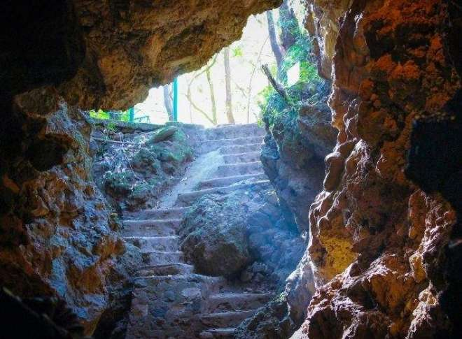
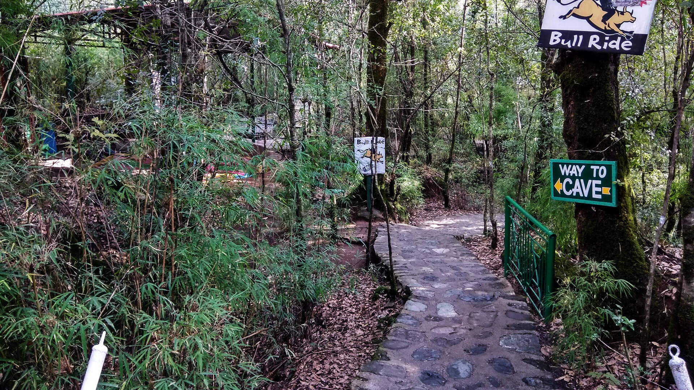
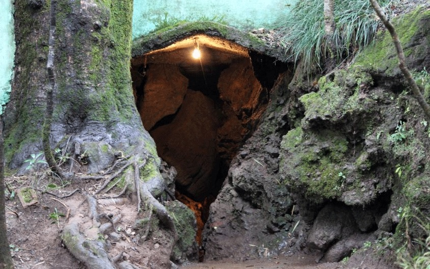
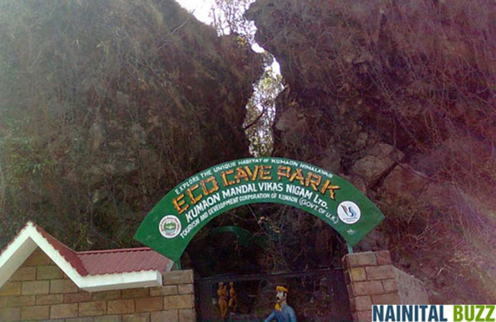
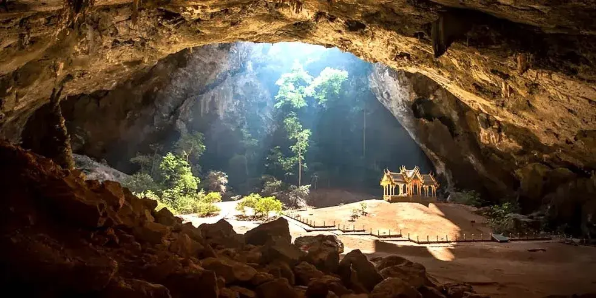

Eco Cave Gardens is one of the most unique and offbeat attractions in Nainital. This beautifully crafted artificial cave complex is nestled near the zoo and ropeway, offering a perfect blend of adventure, nature, and creativity. Spread across lush greenery, it features six themed man-made caves, hanging gardens, mini waterfalls, fountains, and winding pathways — making it feel like stepping into a magical forest world.
The caves are designed with different themes — Tiger Cave, Bat Cave, Snake Cave, Musical Cave, and more — complete with dim lighting, water streams, sound effects, and realistic rock formations. Walking through them gives a thrilling yet peaceful experience. Outside, colorful flower beds, small bridges, and musical fountains create a serene environment perfect for photography, family outings, and quiet moments in nature. It’s a refreshing escape from the busy Mall Road, especially during summer when the cool shade and gentle breeze feel divine.
March to June (pleasant weather) and September to November (clear skies) — avoid monsoon as paths can get slippery.
6 themed caves, hanging gardens, mini waterfalls, musical fountain show in the evening, and easy access via ropeway.
Wear comfortable shoes (some cave paths are low), carry water, and don’t miss the evening fountain show — it’s magical!
"Eco Cave Gardens is where human creativity meets the embrace of nature — a quiet reminder of how Devbhoomi hides wonders even in the smallest corners."